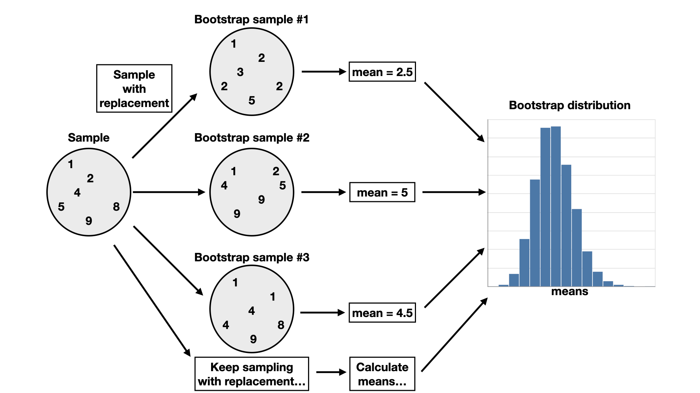
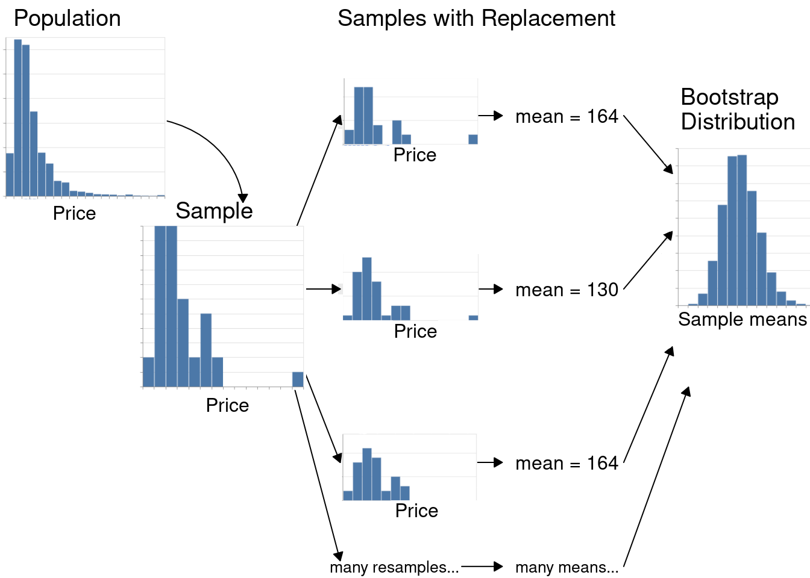

10. 统计推断#
10.1. 概述#
在实际的数据分析中，一项典型任务是根据从总体中抽取的观测数据，对感兴趣的总体某个未知方面作出结论；我们通常拿不到整个总体的数据。数据集中的各种汇总、模式、趋势或关系如何推广到更大的总体，这类数据分析问题称为推断性问题（inferential question）。本章先介绍从总体中抽样的基本思想，再介绍统计推断中的两种常用技术：点估计与区间估计。
10.2. 本章学习目标#
学完本章后，你将能够：
描述可以用统计推断回答的真实问题示例。
定义常见的总体参数（例如均值、比例、标准差）——这些参数通常用抽样数据来估计——并根据样本估计这些参数。
定义以下统计抽样术语：总体、样本、总体参数、点估计和抽样分布。
解释总体参数与样本点估计之间的区别。
用 Python 从有限总体中抽取随机样本。
用 Python 根据有限总体构造抽样分布。
说明样本量如何影响抽样分布。
定义自助法（bootstrap）。
用 Python 构造自助分布来近似抽样分布。
对比自助分布与抽样分布。
10.3. 为什么需要抽样？#
我们常常需要了解：从一部分数据中观测到的量，与更大总体中同样的量之间有什么关系。例如，假设一家零售商正在考虑销售 iPhone 配件，他们想估计这个市场可能有多大。此外，他们还想制定策略，思考如何把产品推销到北美的高校校园。这位零售商可能会提出下面这个问题：
北美所有本科生中拥有 iPhone 的比例是多少？
在上面这个问题中，我们想对北美所有本科生作出结论；这些学生的全体就称为总体。一般来说，总体就是我们想要研究的全部个体或个案。此外，上面这个问题要计算的是一个基于整个总体的量——拥有 iPhone 的比例。这个比例称为总体参数。一般来说，总体参数是整个总体的一个数值特征。要算出上例中的这个数值，我们得逐一询问北美的每一位本科生是否拥有 iPhone。在实践中，直接计算总体参数往往既费时又费钱，有时甚至无法做到。
更实际的做法是针对样本做测量，也就是从总体中抽取的一部分个体。然后我们可以计算一个样本估计值——样本的某个数值特征——用它来估计总体参数。例如，假设我们在北美随机抽取十名本科生（即样本），算出其中拥有 iPhone 的学生所占的比例（即样本估计值）。这时，我们也许会觉得这个比例可以合理地估计整个总体中拥有 iPhone 的学生比例。图 10.1 展示了这一过程。一般来说，利用样本对抽取该样本的更大总体作出结论，这一过程称为统计推断。

图 10.1 用更大总体中的样本得到总体参数点估计的过程。在本例中，一个容量为 10 的样本里有 6 人拥有 iPhone，由此算出的 iPhone 拥有者总体比例估计值为 60%。这张示例图中实际的总体比例是 53.8%。#
请注意，比例并不是我们可能关心的唯一一种总体参数。例如，假设一名在加拿大不列颠哥伦比亚大学读书的本科生想租一套公寓。这名学生需要制定预算，所以想了解不列颠哥伦比亚省温哥华市单间公寓的租金情况。这名学生可能会提出下面这个问题：
加拿大温哥华的单间公寓平均月租金是多少？
在这个例子里，总体是温哥华所有出租的单间公寓，总体参数是平均月租金。这里我们用平均数作为集中趋势的度量，来描述单间公寓租金的“典型取值”。但即便只在这一个例子里，我们也可能关心许多其他总体参数。比如，我们知道温哥华并不是每套单间公寓的月租金都相同。这名学生可能想了解月租金的波动有多大，希望找到一个衡量租金离散程度（或变异性）的指标，例如标准差。又或者，这名学生可能关心月租金超过 $1000 的单间公寓所占的比例。我们想回答的问题会帮助我们确定要估计的参数。如果我们有办法观测到温哥华所有出租的单间公寓，就能精确算出上面每一个数；因此，这些都是总体参数。在实践中你会遇到许多种观测和总体参数，但本章只关注两类情形：
用分类观测估计某个类别的比例
用定量观测估计平均数（或均值）
10.4. 抽样分布#
10.4.1. 比例的抽样分布#
我们来看一个例子，用的是 Inside Airbnb 的数据 [Cox, n.d.]。Airbnb 是一个在线平台，可以预订度假短租和住宿场所。这份数据集包含加拿大温哥华 2020 年 9 月的房源信息。我们的数据包括 ID 编号、街区、房间类型、房源可容纳的人数、浴室数、卧室数、床位数以及每晚价格。
import pandas as pd
airbnb = pd.read_csv("data/listings.csv")
airbnb
| id | neighbourhood | room_type | accommodates | bathrooms | bedrooms | beds | price | |
|---|---|---|---|---|---|---|---|---|
| 0 | 1 | Downtown | Entire home/apt | 5 | 2 baths | 2 | 2 | 150.00 |
| 1 | 2 | Downtown Eastside | Entire home/apt | 4 | 2 baths | 2 | 2 | 132.00 |
| 2 | 3 | West End | Entire home/apt | 2 | 1 bath | 1 | 1 | 85.00 |
| 3 | 4 | Kensington-Cedar Cottage | Entire home/apt | 2 | 1 bath | 1 | 0 | 146.00 |
| 4 | 5 | Kensington-Cedar Cottage | Entire home/apt | 4 | 1 bath | 1 | 2 | 110.00 |
| ... | ... | ... | ... | ... | ... | ... | ... | ... |
| 4589 | 4590 | Downtown Eastside | Entire home/apt | 5 | 1 bath | 1 | 1 | 99.00 |
| 4590 | 4591 | Oakridge | Private room | 2 | 1.5 baths | 1 | 1 | 42.51 |
| 4591 | 4592 | Dunbar Southlands | Private room | 2 | 1.5 shared baths | 1 | 1 | 53.29 |
| 4592 | 4593 | West End | Entire home/apt | 4 | 1 bath | 2 | 2 | 145.00 |
| 4593 | 4594 | Shaughnessy | Entire home/apt | 6 | 1 bath | 3 | 4 | 135.00 |
4594 rows × 8 columns
假设温哥华市政府想了解 Airbnb 租赁信息，以便规划市政条例；他们想知道有多少 Airbnb 房源被列为整套住宅和公寓（而不是私人房间或共享房间）。因此，他们可能想估计所有 Airbnb 房源中房间类型列为“整套住宅或公寓”的真实比例。当然，我们通常拿不到真实的总体，但这里不妨（出于学习目的）设想这份数据集就代表了加拿大温哥华全部 Airbnb 出租房源的总体。我们可以像前面几章那样，用 value_counts 函数配合 normalize 参数，求出每种房间类型的房源比例。
airbnb["room_type"].value_counts(normalize=True)
room_type
Entire home/apt 0.747497
Private room 0.246408
Shared room 0.005224
Hotel room 0.000871
Name: proportion, dtype: float64
可以看到，数据集中 Entire home/apt 房源的比例是 0.747。这个值 0.747 就是总体参数。请记住，在真实的数据分析问题中，这个参数取值通常是未知的，因为一般无法对整个总体做测量。
也许我们可以用一小部分数据来近似它！为了探究这个想法，我们来随机抽取 40 个房源（即从总体中抽取容量为 40 的随机样本），并计算这个样本的比例。我们将用 DataFrame 对象的 sample 方法抽取样本。sample 的参数 n 指定要抽取的样本量。由于这里开始用到随机性，我们还会用 numpy 设置随机种子，让结果可以复现。
import numpy as np
np.random.seed(155)
airbnb.sample(n=40)["room_type"].value_counts(normalize=True)
room_type
Entire home/apt 0.725
Private room 0.250
Shared room 0.025
Name: proportion, dtype: float64
可以看到，这个随机样本中整套住宅/公寓房源的比例是 0.725。哇——这和真实的总体取值很接近！但别忘了，这个比例是用容量为 40 的随机样本算出来的。由此产生两个结果。第一，这个值只是一个估计值，也就是我们利用这个样本对总体参数作出的最佳猜测。既然这里估计的只是单个数值，我们通常称它为点估计。第二，由于样本是随机抽取的，如果我们再抽取另一个容量为 40 的随机样本并计算它的比例，答案就不会相同：
airbnb.sample(n=40)["room_type"].value_counts(normalize=True)
room_type
Entire home/apt 0.625
Private room 0.350
Shared room 0.025
Name: proportion, dtype: float64
果然如此！这一次我们得到的估计值不同了。这说明我们的点估计可能并不可靠。的确，由于存在抽样变异性，估计值会随样本不同而变化。那么，我们应该预期随机样本的估计值有多大变化？换句话说，仅凭单个样本得到的点估计，到底有多可信？
为了弄清楚这一点，我们将从房源总体中模拟抽取许多个样本（远远多于两个），每个样本的容量都是 40，并计算每个样本中整套住宅/公寓房源的比例。这次模拟会产生许多样本比例，我们可以用直方图把它们画出来。从一个总体中抽取给定容量（我们通常记作 \(n\)）的全部可能样本，其估计值的分布称为抽样分布。抽样分布能帮助我们看出，从这一总体抽取容量为 40 的样本时，样本比例预期会有多大的变化。
我们再次用 sample 从 Airbnb 房源总体中抽取容量为 40 的样本。不过这次我们借助列表推导式（list comprehension）把这一操作重复多次（前面在第 9 章中也是这样做的）。这里我们把该操作重复 20,000 次，得到 20,000 个容量为 40 的样本。为了清楚地看出数据框中的每一行来自 20,000 个样本中的哪一个，我们还用 assign 函数添加了一列 replicate 来记录这一信息（这个函数在前面第 3 章中已经介绍过）。concat 调用把列表推导式返回的 20,000 个数据框合并成一个大的数据框。
samples = pd.concat([
airbnb.sample(40).assign(replicate=n)
for n in range(20_000)
])
samples
| id | neighbourhood | room_type | accommodates | bathrooms | bedrooms | beds | price | replicate | |
|---|---|---|---|---|---|---|---|---|---|
| 605 | 606 | Marpole | Entire home/apt | 3 | 1 bath | 1 | 1 | 91.0 | 0 |
| 4579 | 4580 | Downtown | Entire home/apt | 3 | 1 bath | 1 | 2 | 160.0 | 0 |
| 1739 | 1740 | West End | Entire home/apt | 2 | 1 bath | 1 | 2 | 151.0 | 0 |
| 3904 | 3905 | Oakridge | Private room | 6 | 1 private bath | 3 | 3 | 185.0 | 0 |
| 1596 | 1597 | Kitsilano | Entire home/apt | 1 | 1 bath | 1 | 1 | 99.0 | 0 |
| ... | ... | ... | ... | ... | ... | ... | ... | ... | ... |
| 3060 | 3061 | Hastings-Sunrise | Private room | 2 | 3.5 shared baths | 1 | 1 | 78.0 | 19999 |
| 527 | 528 | Kitsilano | Private room | 4 | 1 private bath | 1 | 1 | 99.0 | 19999 |
| 1587 | 1588 | Downtown | Entire home/apt | 6 | 1 bath | 1 | 3 | 169.0 | 19999 |
| 3860 | 3861 | Downtown | Entire home/apt | 3 | 1 bath | 1 | 1 | 100.0 | 19999 |
| 2747 | 2748 | Downtown | Entire home/apt | 3 | 1 bath | 1 | 1 | 285.0 | 19999 |
800000 rows × 9 columns
由于 replicate 列标明了重复编号或样本编号，我们可以确认，我们似乎确实得到了 20,0000 个样本，从样本 0 开始、到样本 19,999 结束。
现在样本已经取好了，我们需要计算每个样本中整套住宅/公寓房源的比例。我们先用 replicate 变量对数据分组——把每个样本中的房源归到一起——然后用 value_counts 并设置 normalize=True，算出每个样本中的比例。下面打印了所得数据框的开头和结尾若干行，说明我们最终得到 20,000 个点估计，每一个样本对应一个。
(
samples
.groupby("replicate")
["room_type"]
.value_counts(normalize=True)
)
replicate room_type
0 Entire home/apt 0.750
Private room 0.250
1 Entire home/apt 0.775
Private room 0.225
2 Entire home/apt 0.750
...
19998 Entire home/apt 0.700
Private room 0.275
Shared room 0.025
19999 Entire home/apt 0.750
Private room 0.250
Name: proportion, Length: 44552, dtype: float64
返回的对象是一个序列（series）。正如前面学过的，我们可以用 reset_index 把它变成数据框。不过这里有一点需要注意：对分组后的序列使用 value_counts 函数再调用 reset_index，会出现两个同名的列，因而报错（在这里，room_type 会出现两次）。好在有个简单的解决办法：调用 reset_index 时，可以用 name 参数指定新列的名称：
(
samples
.groupby("replicate")
["room_type"]
.value_counts(normalize=True)
.reset_index(name="sample_proportion")
)
| replicate | room_type | sample_proportion | |
|---|---|---|---|
| 0 | 0 | Entire home/apt | 0.750 |
| 1 | 0 | Private room | 0.250 |
| 2 | 1 | Entire home/apt | 0.775 |
| 3 | 1 | Private room | 0.225 |
| 4 | 2 | Entire home/apt | 0.750 |
| ... | ... | ... | ... |
| 44547 | 19998 | Entire home/apt | 0.700 |
| 44548 | 19998 | Private room | 0.275 |
| 44549 | 19998 | Shared room | 0.025 |
| 44550 | 19999 | Entire home/apt | 0.750 |
| 44551 | 19999 | Private room | 0.250 |
44552 rows × 3 columns
下面我们把所有步骤串起来，并筛选数据框，只保留我们关心的房间类型。
sample_estimates = (
samples
.groupby("replicate")
["room_type"]
.value_counts(normalize=True)
.reset_index(name="sample_proportion")
)
sample_estimates = sample_estimates[sample_estimates["room_type"] == "Entire home/apt"]
sample_estimates
| replicate | room_type | sample_proportion | |
|---|---|---|---|
| 0 | 0 | Entire home/apt | 0.750 |
| 2 | 1 | Entire home/apt | 0.775 |
| 4 | 2 | Entire home/apt | 0.750 |
| 6 | 3 | Entire home/apt | 0.675 |
| 8 | 4 | Entire home/apt | 0.725 |
| ... | ... | ... | ... |
| 44541 | 19995 | Entire home/apt | 0.775 |
| 44543 | 19996 | Entire home/apt | 0.750 |
| 44545 | 19997 | Entire home/apt | 0.725 |
| 44547 | 19998 | Entire home/apt | 0.700 |
| 44550 | 19999 | Entire home/apt | 0.750 |
20000 rows × 3 columns
现在我们可以用直方图画出样本比例的抽样分布，其中样本的容量为 40（见图 10.2）。请记住：在现实世界中，我们拿不到完整的总体，因此无法抽取许多样本，也无法真正构造或画出抽样分布。我们特意构造了这个例子，让它确实能拿到完整总体，从而可以出于学习目的直接把这个抽样分布画出来。
sampling_distribution = alt.Chart(sample_estimates).mark_bar().encode(
x=alt.X("sample_proportion")
.bin(maxbins=20)
.title("Sample proportions"),
y=alt.Y("count()").title("Count"),
)
sampling_distribution
alt.Chart(...)
图 10.2 样本量为 40 时样本比例的抽样分布。#
图 10.2 中的抽样分布呈钟形（bell-shaped），大致对称，并且是单峰的。分布的中心在 0.75 附近，样本比例的取值大致从 0.55 到 0.95。事实上，我们还可以计算样本比例的均值。
sample_estimates["sample_proportion"].mean()
np.float64(0.74848375)
我们注意到，样本比例的中心就在总体比例取值 0.748 附近！一般来说，抽样分布的均值应该等于总体比例。这是个好消息，因为这说明样本比例既不会高估也不会低估总体比例。换句话说，如果你像上面那样抽取许多样本，结果并不会倾向于高估或低估总体比例。在真实的数据分析中，你只能拿到自己抽到的单个样本，这就意味着你可以认为样本点估计高于或低于真实总体比例的可能性大致相同。
10.4.2. 均值的抽样分布#
上一节中，我们关心的变量——room_type——是分类的，总体参数是比例。正如本章引言所说，每类变量都有许多总体参数可选。如果我们想推断的是定量变量的总体，又该怎么办？例如，一位到加拿大温哥华旅游的旅客可能想估计 Airbnb 房源每晚价格的总体均值（或平均数）。知道平均数有助于他们判断某个房源是否定价过高。我们可以用直方图画出每晚价格的总体分布。
population_distribution = alt.Chart(airbnb).mark_bar().encode(
x=alt.X("price")
.bin(maxbins=30)
.title("Price per night (dollars)"),
y=alt.Y("count()", title="Count"),
)
population_distribution
alt.Chart(...)
图 10.3 加拿大温哥华全部 Airbnb 房源每晚价格（美元）的总体分布。#
在图 10.3 中可以看到，总体分布只有一个峰。它还是偏斜的（skewed），也就是并不对称：大多数房源的每晚价格不到 $250，但少数房源贵得多，在直方图右侧拖出一条长尾。除了把总体分布可视化，我们还可以计算总体均值，也就是所有 Airbnb 房源每晚价格的平均数。
airbnb["price"].mean()
np.float64(154.5109773617762)
不列颠哥伦比亚省温哥华市所有 Airbnb 房源的每晚价格平均为 $154.51。由于这个值是用总体数据算出来的，所以它就是我们的总体参数。
现在假设我们拿不到总体数据（通常都是如此！），却想估计每晚价格的均值。要回答这个问题，可以抽取一个随机样本，具体抽多少房源取决于我们有多少时间和资源。假设我们只能抽
40 个房源。这样的样本会是什么样子？既然我们手头确实有总体数据，不妨利用这一点，用 Python 模拟抽取一个包含 40 个房源的随机样本，仍然使用 sample。
one_sample = airbnb.sample(n=40)
我们可以画一张直方图，把样本中观测的分布可视化（图 10.4），并计算样本均值。
sample_distribution = alt.Chart(one_sample).mark_bar().encode(
x=alt.X("price")
.bin(maxbins=30)
.title("Price per night (dollars)"),
y=alt.Y("count()").title("Count"),
)
sample_distribution
alt.Chart(...)
图 10.4 40 个 Airbnb 房源样本中每晚价格（美元）的分布。#
one_sample["price"].mean()
np.float64(153.48225)
容量为 40 的这个样本的平均数是 $153.48。这个数就是整个总体均值的点估计。回忆一下，总体均值是 $154.51。可见我们的估计值与总体参数相当接近：均值与总体均值大约相差 0.7%。请注意，实践中我们通常无法计算估计的准确程度，因为拿不到总体参数；如果拿得到，那也就不必估计了！
另外，回忆上一节的内容：点估计会有波动；如果再从总体中抽取一个随机样本，估计值就可能改变。那么，上面得到的点估计只是运气好而已吗？在这个例子中，容量为 40 的不同样本之间，估计值的波动有多大？同样，由于我们能拿到总体数据，可以抽取许多样本，画出样本均值的抽样分布，借此感受这种波动。这里我们沿用已经存进 samples 变量的 20,000 个容量为 40 的样本。先计算每个重复的样本均值，再画出容量为 40 的样本的样本均值抽样分布。
sample_estimates = (
samples
.groupby("replicate")
["price"]
.mean()
.reset_index()
.rename(columns={"price": "mean_price"})
)
sample_estimates
| replicate | mean_price | |
|---|---|---|
| 0 | 0 | 187.00000 |
| 1 | 1 | 148.56075 |
| 2 | 2 | 165.50500 |
| 3 | 3 | 140.93925 |
| 4 | 4 | 139.14650 |
| ... | ... | ... |
| 19995 | 19995 | 198.50000 |
| 19996 | 19996 | 192.66425 |
| 19997 | 19997 | 144.88600 |
| 19998 | 19998 | 146.08800 |
| 19999 | 19999 | 156.25000 |
20000 rows × 2 columns
sampling_distribution = alt.Chart(sample_estimates).mark_bar().encode(
x=alt.X("mean_price")
.bin(maxbins=30)
.title("Sample mean price per night (dollars)"),
y=alt.Y("count()").title("Count")
)
sampling_distribution
alt.Chart(...)
图 10.5 样本量为 40 时样本均值的抽样分布。#
在图 10.5 中，均值的抽样分布呈单峰、钟形。大多数估计值大约介于 $140 与 $170 之间；但也有相当一部分情形落在这个范围之外（也就是说，点估计与总体参数相差较大）。所以，我们只用 0.7% 的误差就估计出了总体均值，看起来确实相当走运。
我们把总体分布、样本分布和抽样分布画在同一张图上，以便比较，见图 10.6。比较这三个分布可以看到，它们的中心都在同一个价位附近（大约 $150）。原始总体分布有一条很长的右侧长尾，样本分布的形状与总体分布相似。然而，抽样分布的形状与总体分布、样本分布都不一样。相反，它呈钟形，离散程度比总体分布和样本分布都小。样本均值的波动比单个观测小，因为任何随机样本中都会既有较大的取值、也有较小的取值，这使平均数不至于太过极端。
alt.VConcatChart(...)
图 10.6 总体分布、样本分布与抽样分布的对比。#
样本均值的抽样分布波动相当大——也就是说，我们得到的点估计并不十分可靠——那么，有没有办法改进估计呢？改进点估计的一种办法是抽取更大的样本。为了说明这样做的影响，我们分别抽取容量为 20、50、100 和 500 的大量样本，并画出样本均值的抽样分布。我们用一条竖线标出抽样分布的均值。
alt.FacetChart(...)
图 10.7 抽样分布的比较，均值用竖线标出。#
从图 10.7 的可视化结果可以看出，关于样本均值可以清楚地看到三点：
样本均值的均值（即在各个样本之间求平均）等于总体均值。换句话说，抽样分布以总体均值为中心。
增大样本量会减小抽样分布的离散程度（也就是变异性）。因此，样本量越大，总体参数的点估计就越可靠。
样本均值的分布大致呈钟形。
备注
你可能会注意到，图 10.7 中 n = 20 那一组里，分布并不完全呈钟形，还稍稍向右偏斜！你还可能注意到，n = 50 以及更大的几组里，这种偏斜似乎消失了。一般来说，无论均值还是比例，抽样分布都只有在样本量足够大之后才会变成钟形。“足够大”是多大？很遗憾，这完全取决于具体问题。不过按经验法则，样本量通常至少达到 20 就够了。
10.4.3. 小结#
点估计是用总体的一个样本算出的单个数值（例如均值或比例）。
估计值的抽样分布，是指从同一总体中抽取所有可能的固定大小样本时，该估计值的分布。
抽样分布的形状通常是单峰钟形，并以总体均值或总体比例为中心。
抽样分布的离散程度与样本量有关。样本量越大，抽样分布的离散程度就越小。
10.5. 自助法#
10.5.1. 概述#
为什么要如此强调抽样分布？
上一节我们看到，可以用从总体中抽到的一个样本算出总体参数的点估计。而且，由于我们构造的例子能拿到总体数据，所以可以评估估计有多准确，甚至能看出不同样本之间估计值的波动有多大。但在真正的数据分析场景中，我们通常只有一个样本，拿不到总体本身。因此，无法像上一节那样构造抽样分布。而且正如我们看到的，样本估计值与总体参数可能相差很大。所以，只报告单个样本的点估计也许还不够，我们还需要报告点估计取值的某种不确定性。
遗憾的是，没有总体的完整数据，就无法构造精确的抽样分布。不过，如果我们能以某种方式近似出样本所对应的抽样分布，就可以用这个近似来报告样本点估计有多不确定（正如上面用精确抽样分布所做的那样）。实现这一点有若干种方法；本书将使用自助法。我们将只使用总体中的一个样本，讨论区间估计并构造置信区间。置信区间是总体参数的合理取值范围。
关键思路如下。首先，只要样本足够大，它就看起来像总体。请注意图 10.8 中从总体抽取的不同大小样本的直方图形状。可以看到，样本足够大时，样本的分布与总体分布很相似。
alt.VConcatChart(...)
图 10.8 从总体抽取的不同大小样本的比较。#
上一节中，我们从总体中抽取了许多同样大小的样本，以了解样本估计值的变异性。但如果我们的样本足够大、看起来就像总体，我们就可以把样本当作总体，转而从它里面抽取更多同样大小的样本（有放回，with replacement）！这个十分巧妙的技巧叫作自助法。请注意，从我们唯一观测到的样本中抽取许多样本，得到的并不是真正的抽样分布，而是一个近似，我们称之为自助分布。
备注
使用自助法时，我们必须有放回地抽样。否则，如果我们有一个容量为 \(n\) 的样本，再从中无放回地抽取一个容量为 \(n\) 的样本，那只会把原来的样本原封不动地取回来！
本节将介绍如何用 Python 从单个样本创建自助分布。整个过程在图 10.9 中做了可视化。对于容量为 \(n\) 的样本，你需要做以下几步：
从取自总体的原始样本中随机选取一个观测。
记录这个观测的取值。
把这个观测放回样本。
重复第 1 至第 3 步（有放回地抽样），直到得到 \(n\) 个观测，它们构成一个自助样本。
计算自助样本中这 \(n\) 个观测的自助点估计（例如均值、中位数、比例、斜率等）。
重复第 1 至第 5 步很多次，得到点估计的分布（即自助分布）。
计算观测到的点估计附近的合理取值范围。

图 10.9 自助法流程概览。#
10.5.2. 用 Python 实现自助法#
我们接着用 Airbnb 的例子，说明如何只靠从总体中抽出的一个样本，构造并使用自助分布。仍然假设我们想估计加拿大温哥华所有 Airbnb 房源每晚价格的总体均值，而手头只有一个样本量为 40 的样本。回想一下，我们的点估计是 $153.48。样本中价格的直方图见图 10.10。
one_sample
| id | neighbourhood | room_type | accommodates | bathrooms | bedrooms | beds | price | |
|---|---|---|---|---|---|---|---|---|
| 4025 | 4026 | Renfrew-Collingwood | Private room | 1 | 1 shared bath | 1 | 1 | 40.00 |
| 1977 | 1978 | Fairview | Private room | 1 | 2 baths | 3 | 1 | 70.00 |
| 4008 | 4009 | Downtown | Entire home/apt | 4 | 1 bath | 1 | 1 | 269.00 |
| 1543 | 1544 | Kensington-Cedar Cottage | Entire home/apt | 6 | 2 baths | 3 | 5 | 320.00 |
| 3350 | 3351 | Downtown | Entire home/apt | 2 | 1 bath | 1 | 1 | 140.00 |
| 804 | 805 | Mount Pleasant | Private room | 2 | 1 private bath | 1 | 1 | 77.00 |
| 2286 | 2287 | Marpole | Entire home/apt | 4 | 1 bath | 2 | 2 | 105.00 |
| 1010 | 1011 | Strathcona | Entire home/apt | 2 | 1 bath | 1 | 1 | 120.00 |
| 1878 | 1879 | Fairview | Private room | 2 | 1 private bath | 1 | 1 | 175.00 |
| 1644 | 1645 | Downtown | Entire home/apt | 4 | 2 baths | 2 | 1 | 150.00 |
| 4579 | 4580 | Downtown | Entire home/apt | 3 | 1 bath | 1 | 2 | 160.00 |
| 2771 | 2772 | Dunbar Southlands | Entire home/apt | 5 | 1 bath | 2 | 2 | 130.00 |
| 4151 | 4152 | Kitsilano | Entire home/apt | 2 | 1 bath | 1 | 1 | 289.00 |
| 4495 | 4496 | Riley Park | Entire home/apt | 2 | 1 bath | 1 | 1 | 115.00 |
| 1308 | 1309 | Riley Park | Entire home/apt | 2 | 1 bath | 1 | 1 | 105.00 |
| 2246 | 2247 | Mount Pleasant | Entire home/apt | 4 | 1 bath | 1 | 2 | 105.00 |
| 2335 | 2336 | Kensington-Cedar Cottage | Entire home/apt | 3 | 1 bath | 2 | 2 | 85.00 |
| 4059 | 4060 | Downtown | Entire home/apt | 5 | 2 baths | 2 | 3 | 250.00 |
| 1280 | 1281 | Hastings-Sunrise | Entire home/apt | 6 | 1 bath | 2 | 3 | 100.00 |
| 4324 | 4325 | Renfrew-Collingwood | Private room | 1 | 1 shared bath | 1 | 0 | 25.00 |
| 3403 | 3404 | Arbutus Ridge | Entire home/apt | 15 | 4 baths | 6 | 8 | 664.00 |
| 1729 | 1730 | Renfrew-Collingwood | Entire home/apt | 6 | 1 bath | 2 | 3 | 93.00 |
| 3722 | 3723 | Downtown | Entire home/apt | 4 | 1 bath | 3 | 6 | 275.00 |
| 241 | 242 | Hastings-Sunrise | Private room | 2 | 1 shared bath | 1 | 1 | 50.00 |
| 3955 | 3956 | Dunbar Southlands | Private room | 2 | 1.5 shared baths | 1 | 1 | 60.00 |
| 1042 | 1043 | Kitsilano | Private room | 1 | 1 shared bath | 1 | 1 | 66.00 |
| 649 | 650 | Sunset | Entire home/apt | 5 | 1 bath | 2 | 2 | 196.00 |
| 1995 | 1996 | Riley Park | Private room | 2 | 1 shared bath | 1 | 1 | 70.00 |
| 363 | 364 | Kensington-Cedar Cottage | Entire home/apt | 3 | 1 bath | 1 | 2 | 120.00 |
| 1783 | 1784 | Downtown Eastside | Private room | 2 | 1 private bath | 1 | 1 | 60.00 |
| 805 | 806 | Mount Pleasant | Entire home/apt | 4 | 1 bath | 2 | 2 | 150.00 |
| 254 | 255 | Downtown | Entire home/apt | 4 | 1.5 baths | 2 | 2 | 300.00 |
| 3365 | 3366 | Sunset | Private room | 1 | 1 private bath | 1 | 1 | 100.00 |
| 4562 | 4563 | Downtown | Private room | 1 | 1 shared bath | 1 | 1 | 64.29 |
| 2124 | 2125 | Downtown | Entire home/apt | 4 | 1 bath | 2 | 3 | 200.00 |
| 18 | 19 | Downtown | Entire home/apt | 4 | 2 baths | 2 | 2 | 200.00 |
| 1997 | 1998 | Downtown | Entire home/apt | 6 | 2 baths | 3 | 3 | 257.00 |
| 4329 | 4330 | West End | Entire home/apt | 2 | 1 bath | 1 | 0 | 92.00 |
| 3408 | 3409 | Downtown | Entire home/apt | 2 | 2 baths | 2 | 2 | 189.00 |
| 635 | 636 | Grandview-Woodland | Entire home/apt | 6 | 2 baths | 1 | 2 | 103.00 |
one_sample_dist = alt.Chart(one_sample).mark_bar().encode(
x=alt.X("price")
.bin(maxbins=30)
.title("Price per night (dollars)"),
y=alt.Y("count()").title("Count"),
)
one_sample_dist
alt.Chart(...)
图 10.10 样本量为 40 的一个样本中每晚价格（美元）的直方图。#
该样本的直方图是偏斜的，有少数几个观测落在右侧较远处。样本均值为 $153.48。请记住，在实践中，我们通常只有从总体中抽到的这一个样本。所以这个样本和这个估计值就是我们能使用的全部数据。
现在我们在 Python 中执行上面列出的第 1 至第 5 步，生成一个自助样本，并据此算出点估计。我们继续使用数据框的 sample 函数。这里有一点很关键：我们设置 frac=1（“fraction”，比例），表示想抽取的条数与数据框的行数同样多（也可以设
n=40，但那样就得自己留意数据框里有多少行）。由于做自助法需要有放回抽样，所以要把 replace 参数改成 True。
boot1 = one_sample.sample(frac=1, replace=True)
boot1_dist = alt.Chart(boot1).mark_bar().encode(
x=alt.X("price")
.bin(maxbins=30)
.title("Price per night (dollars)"),
y=alt.Y("count()", title="Count"),
)
boot1_dist
alt.Chart(...)
图 10.11 自助分布。#
boot1["price"].mean()
np.float64(132.65)
从图 10.11 中可以看到，自助样本的直方图与原始样本的直方图形状相似。虽然两个分布的形状相近，但并不完全相同。你还会发现，原始样本的均值与自助样本的均值不一样。这是怎么发生的呢？请记住，我们是从原始样本中有放回地抽样，所以不会再次抽到完全相同的样本取值。我们是在假装这一个样本与总体很接近，并通过从原始样本中再抽一个样本，来模拟从总体中再抽一个样本。
现在我们用原始样本（one_sample）生成 20,000 个自助样本，并计算每个重复的均值。要记住，这样做的前提是 one_sample 看起来像原始总体；但既然我们拿不到总体本身，这通常已经是我们能做的最好的选择了。请注意，这里把列表推导式拆成了多行，以便阅读。
boot20000 = pd.concat([
one_sample.sample(frac=1, replace=True).assign(replicate=n)
for n in range(20_000)
])
boot20000
| id | neighbourhood | room_type | accommodates | bathrooms | bedrooms | beds | price | replicate | |
|---|---|---|---|---|---|---|---|---|---|
| 2286 | 2287 | Marpole | Entire home/apt | 4 | 1 bath | 2 | 2 | 105.0 | 0 |
| 254 | 255 | Downtown | Entire home/apt | 4 | 1.5 baths | 2 | 2 | 300.0 | 0 |
| 2246 | 2247 | Mount Pleasant | Entire home/apt | 4 | 1 bath | 1 | 2 | 105.0 | 0 |
| 4579 | 4580 | Downtown | Entire home/apt | 3 | 1 bath | 1 | 2 | 160.0 | 0 |
| 4495 | 4496 | Riley Park | Entire home/apt | 2 | 1 bath | 1 | 1 | 115.0 | 0 |
| ... | ... | ... | ... | ... | ... | ... | ... | ... | ... |
| 1997 | 1998 | Downtown | Entire home/apt | 6 | 2 baths | 3 | 3 | 257.0 | 19999 |
| 241 | 242 | Hastings-Sunrise | Private room | 2 | 1 shared bath | 1 | 1 | 50.0 | 19999 |
| 1878 | 1879 | Fairview | Private room | 2 | 1 private bath | 1 | 1 | 175.0 | 19999 |
| 1783 | 1784 | Downtown Eastside | Private room | 2 | 1 private bath | 1 | 1 | 60.0 | 19999 |
| 4495 | 4496 | Riley Park | Entire home/apt | 2 | 1 bath | 1 | 1 | 115.0 | 19999 |
800000 rows × 9 columns
我们来看看自助样本前六次重复的直方图。
six_bootstrap_samples = boot20000.query("replicate < 6")
six_bootstrap_fig = alt.Chart(six_bootstrap_samples, height=150).mark_bar().encode(
x=alt.X("price")
.bin(maxbins=20)
.title("Price per night (dollars)"),
y=alt.Y("count()").title("Count")
).facet(
"replicate:N", # Recall that `:N` converts the variable to a categorical type
columns=2
)
six_bootstrap_fig
alt.FacetChart(...)
图 10.12 自助样本前六次重复的直方图。#
从图 10.12 中可以看到，各个自助样本的分布有何不同。如果分别计算这六个样本的样本均值，会发现它们彼此也不相同。要计算每个样本的均值，我们先按“replicate”分组，这一列记录的是样本/重复编号。然后计算
price 列的均值，并把它重命名为 mean_price，让列名更有描述性。最后用 reset_index
把 replicate 的取值变回数据框中的一列。
(
six_bootstrap_samples
.groupby("replicate")
["price"]
.mean()
.reset_index()
.rename(columns={"price": "mean_price"})
)
| replicate | mean_price | |
|---|---|---|
| 0 | 0 | 155.67175 |
| 1 | 1 | 154.42500 |
| 2 | 2 | 149.35000 |
| 3 | 3 | 169.13225 |
| 4 | 4 | 179.79675 |
| 5 | 5 | 188.28225 |
自助样本之间的分布和均值之所以不同，是因为我们采用了有放回抽样。如果改成无放回抽样，那么每次得到的样本取值都会完全一样。
接下来，我们为这 20,000 个自助样本分别计算均值的点估计，并由此得到这些点估计的自助分布。自助分布（图 10.13）可以提示我们，如果取多个样本，点估计会有怎样的表现。
boot20000_means = (
boot20000
.groupby("replicate")
["price"]
.mean()
.reset_index()
.rename(columns={"price": "mean_price"})
)
boot20000_means
| replicate | mean_price | |
|---|---|---|
| 0 | 0 | 155.67175 |
| 1 | 1 | 154.42500 |
| 2 | 2 | 149.35000 |
| 3 | 3 | 169.13225 |
| 4 | 4 | 179.79675 |
| ... | ... | ... |
| 19995 | 19995 | 159.29675 |
| 19996 | 19996 | 137.20000 |
| 19997 | 19997 | 136.55725 |
| 19998 | 19998 | 161.93950 |
| 19999 | 19999 | 170.22500 |
20000 rows × 2 columns
boot_est_dist = alt.Chart(boot20000_means).mark_bar().encode(
x=alt.X("mean_price")
.bin(maxbins=20)
.title("Sample mean price per night (dollars)"),
y=alt.Y("count()").title("Count"),
)
boot_est_dist
alt.Chart(...)
图 10.13 自助样本均值的分布。#
我们来比较自助分布——由容量为 40 的原始样本反复抽样构造而来——与真实的抽样分布——相当于从总体中反复抽样。
alt.VConcatChart(...)
图 10.14 自助样本均值的分布与抽样分布的比较。#
从图 10.14 中我们可以得到两个要点。第一，真实抽样分布与自助分布的形状和离散程度相似；自助分布能帮助我们体会点估计的变异性。第二个要点是：这两个分布的均值略有不同。抽样分布的中心是总体均值 $154.51。而自助分布的中心是原始样本中每晚价格的平均值 $153.48。由于我们不断从原始样本中重抽样，可以看到自助分布的中心落在原始样本的均值上（样本均值的抽样分布则不同，它的中心是总体参数的取值）。
图 10.15 总结了自助法的流程。这里的思路是：当我们只有一个样本时，可以用自助样本均值的分布来近似样本均值的抽样分布。既然自助分布能相当好地近似抽样分布的离散程度，我们就可以借助自助分布的离散程度，结合点估计给出总体参数的合理取值范围！

图 10.15 自助法流程总结。#
10.5.3. 用自助法计算合理取值范围#
现在我们已经构造出自助分布，接下来用它来算出一个近似的 95% 百分位数自助置信区间（percentile bootstrap confidence interval）。置信区间是总体参数的合理取值范围。我们要找出覆盖自助分布中间 95% 的那一段取值，这样就得到了 95% 置信区间。你也许会问：“95% 置信”是什么意思？如果我们抽取 100 个随机样本，算出 100 个 95% 置信区间，那么其中大约 95% 的区间会覆盖总体参数的取值。请注意，95% 这个数并没有什么特别之处，我们也可以用其他水平，比如 90% 或 99%。置信水平与精度之间存在权衡：置信水平越高，区间越宽；置信水平越低，区间越窄。因此，选择哪个水平取决于我们愿意承担多大的出错概率，而这又取决于出错对我们的应用会有什么后果。一般来说，我们选定的置信水平，既要让自己对不确定性感到安心，又不能严格到让区间失去用处。例如，如果我们的决策会影响人的生命，一旦出错后果致命，那我们可能希望很有把握，于是选择更高的置信水平。
要计算 95% 百分位数自助置信区间，我们按下面的步骤来做：
把自助分布中的观测按从小到大的顺序排列。
找出这样的取值：有 2.5% 的观测落在它以下（即第 2.5 百分位数）。把这个取值作为区间的下限。
找出这样的取值：有 97.5% 的观测落在它以下（即第 97.5 百分位数）。把这个取值作为区间的上限。
要在 Python 中完成这些步骤，我们可以用 DataFrame 的 quantile 函数。分位数用比例而不是百分数表示，所以第 2.5 百分位数和第 97.5 百分位数分别对应 0.025 和 0.975
分位数。
ci_bounds = boot20000_means["mean_price"].quantile([0.025, 0.975])
ci_bounds
0.025 121.607069
0.975 191.525362
Name: mean_price, dtype: float64
我们的区间，从 $121.61 到 $191.53，覆盖了自助分布中位于中间 95% 的样本均值价格。我们可以在图 10.16 中把这个区间画在分布上。
alt.LayerChart(...)
图 10.16 带百分位数上下限的自助样本均值分布。#
要完成对总体参数的估计，我们需要报告点估计以及置信区间的下限和上限。这里 40 个 Airbnb 房源每晚价格的样本均值为 $153.48，而我们有 95% 的“把握”认为，温哥华所有 Airbnb 房源每晚价格的真实总体均值介于 $121.61 和 $191.53 之间。可以看到，我们的区间确实覆盖了真实的总体均值 $154.51! 不过在实践中，我们并不知道自己的区间有没有覆盖总体参数，因为我们通常只有一个样本，而不是整个总体。只有一个样本时，这已经是我们能做到的最好结果了！
本章只是统计推断之旅的开端。我们可以把这里学到的概念推广出去，做远远不止于报告点估计和置信区间的事情，比如检验总体之间是否存在真实差异、检验变量之间是否有关联，等等。我们才刚刚触及统计推断的皮毛；不过，本章介绍的内容会成为你今后学习更高级统计方法的基础！
10.6. 习题#
本章内容的配套练习题见练习册仓库中“统计推断”（Statistical inference）那两行。点击“查看练习册”（view worksheet）即可预览本章每份练习册的非交互版本。若要交互式地做这些习题，请按照练习册仓库中的说明下载全部练习册，并按第 13 章中给出的计算机环境配置说明操作。这样才能确保练习册提供的自动反馈与指导按预期正常工作。
10.7. 拓展资源#
《OpenIntro Statistics》 [Diez et al., 2019] 的第 4 至第 7 章在进一步学习统计推断时，是一个不错的进阶选择。虽然它无疑仍是一部入门教材，但这里的内容会更偏数学一些。视你的基础而定，你也许反而应该先读第 1 至第 3 章，那里会讲到概率论的一些基本概念。概率论看似偏离主题，其实它正是统计学的语言；如果对概率有扎实的掌握，更高阶的统计学对你来说就会水到渠成！
10.8. 参考文献#
- Coxd.
Murray Cox. Inside Airbnb. n.d. URL: http://insideairbnb.com/ (visited on 2020-09-01).
- DcCetinkayaRB19
David Diez, Mine Çetinkaya-Rundel, and Christopher Barr. OpenIntro Statistics. OpenIntro, Inc., 2019. URL: https://openintro.org/book/os/.